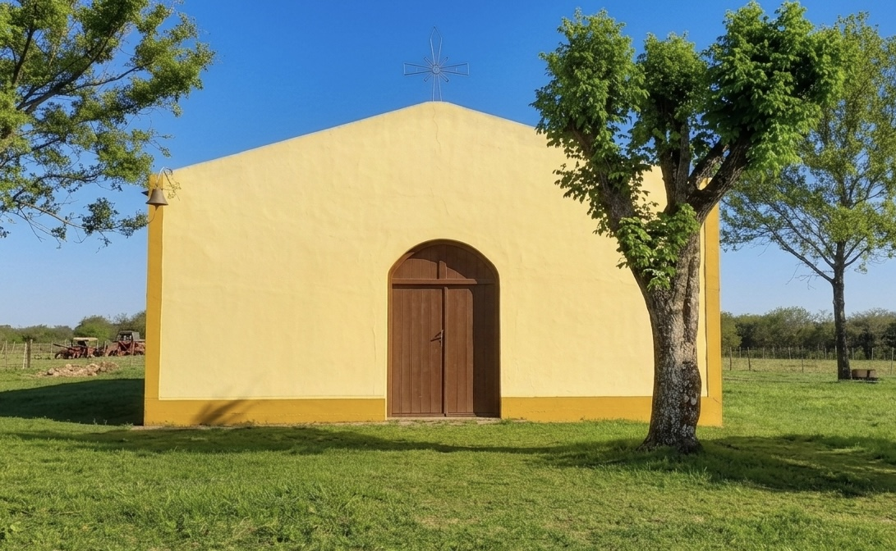
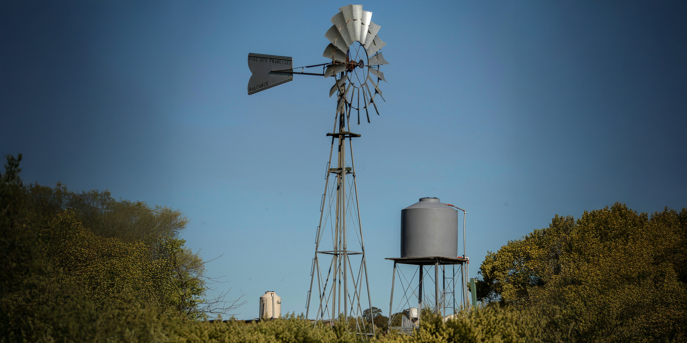
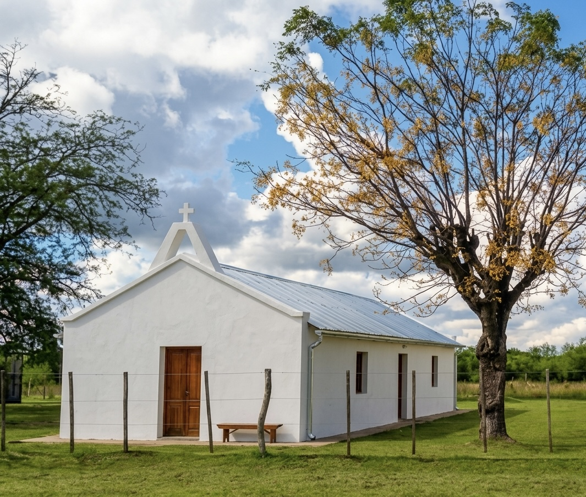

En el corazón de Colonia Federal, Entre Ríos. Un legado de fe, historia y comunidad forjado por el trabajo y la tierra.
Nacida de la colonización agrícola, nuestra comunidad se forjó con familias que transformaron la tierra con esfuerzo. La Capilla es el punto donde convergen nuestra cultura del trabajo y nuestra fe profunda.

La capilla surge gracias al esfuerzo de vecinos y familias de la colonia, con el objetivo de contar con un espacio de fe cercano. A lo largo de los años, ha sido testigo de celebraciones religiosas, encuentros comunitarios y generaciones enteras que construyeron su historia alrededor de este lugar.
La devoción a la Virgen de Luján, patrona de la Argentina, refuerza el vínculo espiritual que une a toda la comunidad. Las visitas del Obispo representan momentos especiales que fortalecen la fe y consolidan el vínculo con la Iglesia.
Transformando el antiguo edificio sin techo en un Guardián de nuestra Memoria.
Nuevo techo y refuerzo estructural.
Objetos y fotos de familias pioneras.
Capacitaciones y conectividad para la zona.

Construyendo futuro para las próximas generaciones.
Podés colaborar con materiales, mano de obra o aportes económicos. Ayudanos a recuperar este símbolo de Colonia Federal.
Colonia Federal, Entre Ríos, Argentina
+54 9 3454 65 6179
Escribinos para sumarte al proyecto o coordinar donaciones.
Enviar mensaje directo